Audiobook Catalogue
| Category | Image | Title | Author | Price | Details |
|---|---|---|---|---|---|
| Fiction |  |
The Great Gatsby | F. Scott Fitzgerald | £7.99 |
Summary - A story about Jay Gatsby, a self-made millionaire. Author - F. Scott Fitzgerald, an American novelist, essayist and short story writer Reviews - 4/5 |
| Fiction |  |
To Kill a Mockingbird | Harper Lee | £9.99 |
Summary - A story about a person trying to prove the innocence of Tom Robinson, a black man in 1930s Alabama. Author - An American novelist who won the 1961 Pulitzer Prize. Reviews - 4.5/5 |
| Romance | 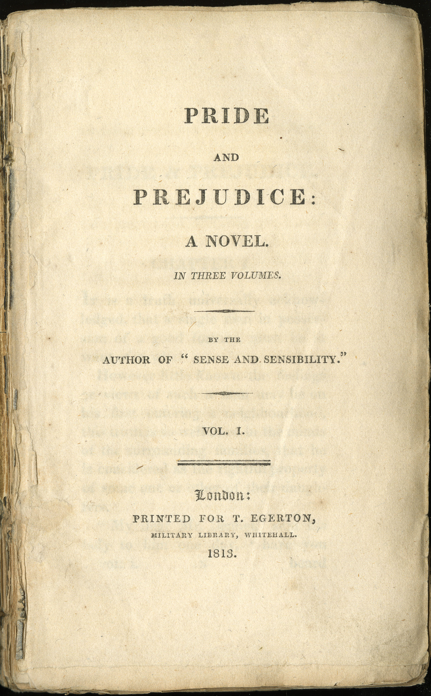 | Pride and Prejudice | Jane Austen | £8.99 |
Summary - A love story about Elizabeth Bennet and Mr. Darcy who both have to overcome their biases to end up together. Author - An English novelist in the 18th century. Reviews - 4.86/5 |
| Romance |  |
Jane Eyre | Charlotte Bronte | £7.99 |
Summary - A story about the orphaned Jane Eyre's journey from a harsh childhood to finding love and independence. Author - An English novelist who published Jane Eyre under the male pseudonym Currer Bell. Reviews - 4.97/5 |
| Romance |  |
Outlander | Diana Gabaldon | £12.99 |
Summary - A story about a 20th-century British Nurse Claire Randall as she time travels to 18th-century Scotland, where she finds love. Author - An American author and television author. Reviews - 3.98/5 |
| Romance | 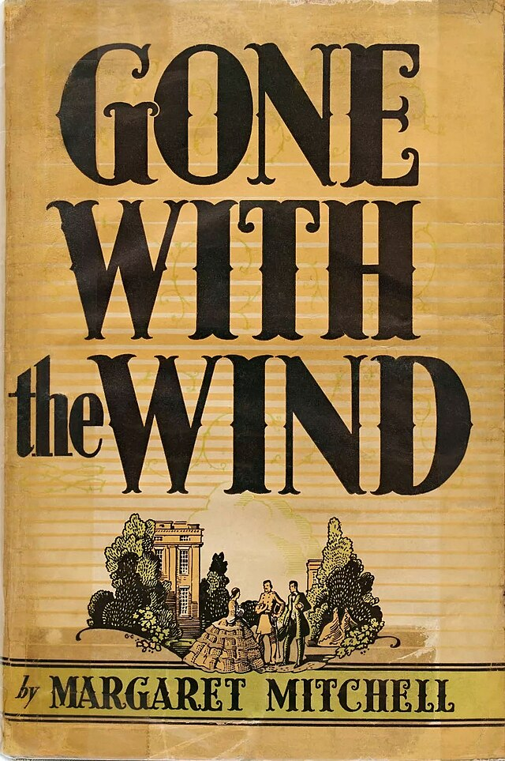 | Gone with the Wind | Margaret Mitchell | £9.99 |
Summary - A story about Scarlett O'Hara during the Civil War and her love affairs with Ashley Wilkes and Rhett Butler. Author - An American novelist and journalist. Reviews - 4/5 |
| Fantasy | 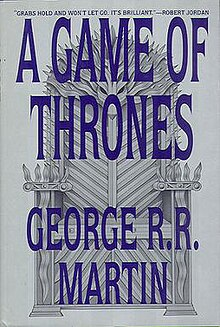 | A Game of Thrones | George R.R. Martin | £12.99 |
Summary - A story about several noble houses of Westeros and a complicated, multiparty war for the Iron Throne that features conflicts, alliances and betrayals. Author - An American author, television writer and television producer. Reviews - 4.65/5 |
| Fantasy |  |
Lord of the Rings | J.R.R. Tolkien | £13.99 |
Summary - A story about hobbit Frodo Baggins as he embarks on a perilous quest to destroy the One Ring. Author - An English writer and philogist. Reviews - 4.99/5 |
| Fantasy | 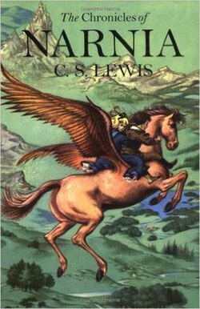 | The Chronicles of Narnia | C.S. Lewis | £11.99 |
Summary - A story about the magical world of Narnia, where children from our world are transported to fight against evil. Author - A British writer, literary scholar, and Anglican lay theologian./p> Reviews - 3.98/5 |
| Fantasy | 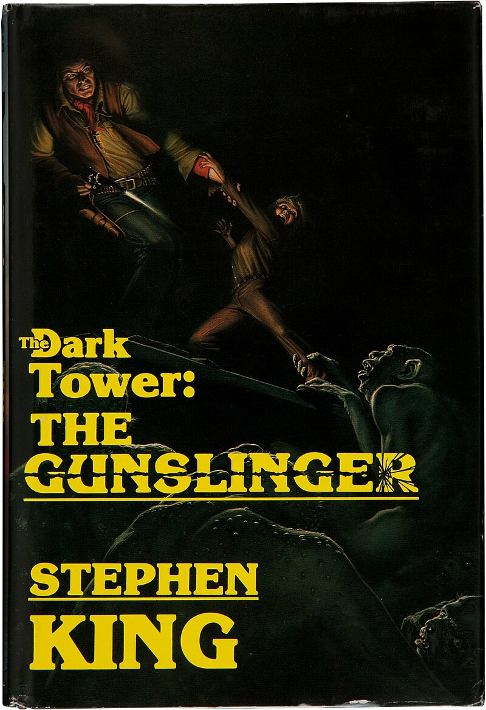 | The Gunslinger | Stephen King | £8.99 |
Summary - A story about Roland Deschain, who is tracking an enigmatic magician known only as the man in black. Author - An American author. Reviews - 4.13/5 |
| Fantasy |  |
Dune | Frank Herbert | £10.99 |
Summary - A story about Paul Atreides set on the desert planet Arrakis. Author - An American science-fiction author. Reviews - 4/5 |
| Fantasy |  |
Ender's Game | Orson Scott Card | £8.99 |
Summary - A story about a young boy, Ender Wiggin, who is sent to a training academy named Battle School, built to train people to become soldiers.. Author - An American writer Reviews - 4.23/5 |
| Mystery | 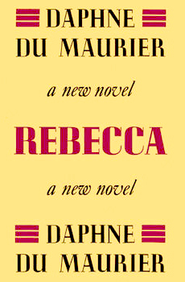 | Rebecca | Daphne du Maurier | £5.99 |
Summary - A story about a heroine who lives in Europe with her husband. Author - An English novelist, biographer and playwright. Reviews - 4.45/5 |
| Mystery | Angels & Demons | Dan Brown | £8.99 |
Summary - A story about Robert Langdon who races against time to prevent the Vatican from being destroyed by a stolen antimatter bomb. Author - An American author. Reviews - 3.45/5 |
|
| Mystery |  |
Gone Girl | Gillian Flynn | £8.99 |
Summary - A story about Nick and Amy Dunne, whose marriage unravels after Amy disappears on their fifth anniversary. Author - An American author, screenwriter and producer Reviews - 3.73/5 |
| Mystery | 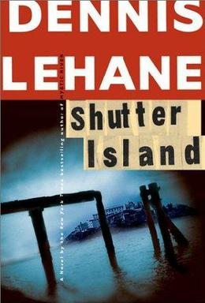 | Shutter Island | Dennis Lehane | £6.99 |
Summary - A story about a US Marshal who goes to an isolated hospital for the criminally insane to investigate the disappearance of a patient. Author - An American author. Reviews - 3/5 |
| Crime | 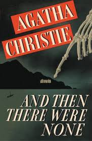 | And Then There Were None | Agatha Christie | £3.99 |
Summary - A story about ten strangers being lured to a remote island. Author - An English author. Reviews - 4.46/5 |
| Crime |  |
The Godfather | Mario Puzo | £5.99 |
Summary - A story about the Corleone family, a powerful New York Mafia family. Author - An American author and screenwriter. Reviews - 4/5 |
| Crime | 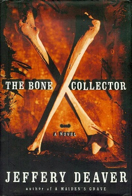 | The Bone Collector | Jeffery Deaver | £5.99 |
Summary - A story about investigations of brutal kidnappings and murders in New York City, leaving bone-related clues. Author - An American mystery and crime writer. Reviews - 4.3/5 |
| Humour | 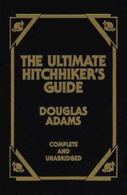 | The Ultimate Hitchhiker's Guide to the Galaxy | Douglas Adams | £1.99 |
Summary - A story the misadventures of the last surviving Earth man, Arthur Dent. Author - An English author, humourist, and screenwriter. Reviews - 4.82/5 |
| Humour | 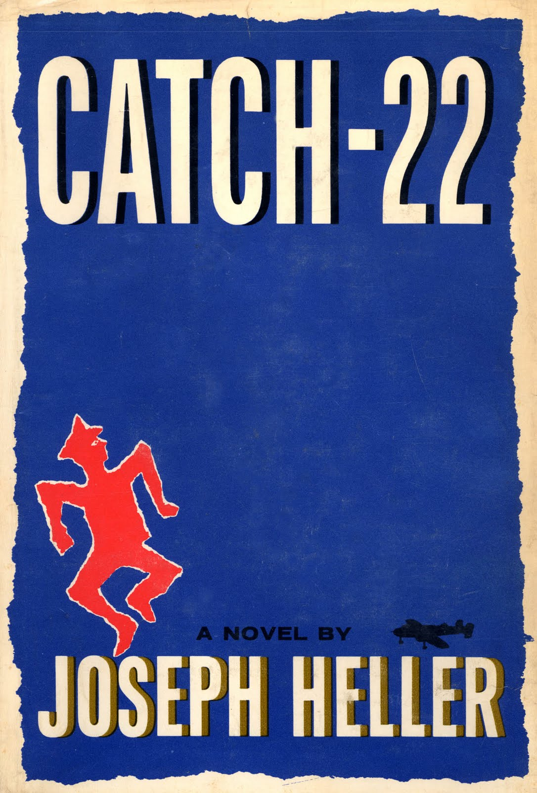 | Catch-22 | Joseph Heller | £2.99 |
Summary - A story John Yossarian, an American bombardier stationed on an island during WW2. Author - An American author of novels, short stories, plays, and screenplays. Reviews - 4.11/5 |
| Humour | 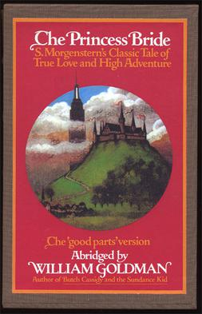 | The Princess Bride | William Goldman | £6.99 |
Summary - A story about a swashbuckling farmhand named Westley. Author - An American novelist, playwright, and screenwriter. Reviews - 4/5 |
| Horror |  |
The Shining | Stephen King | £8.99 |
Summary - A story about Jack Torrance and his psychic son Danny. Author - An American author. Reviews - 4.12/5 |
| Horror |  |
It | Stephen King | £7.99 |
Summary - A story about seven children terrorised by a shape-shifting, ancient entity that preys on the fears of its victims.. Author - An American author. Reviews - 3.14/5 |
| Horror | 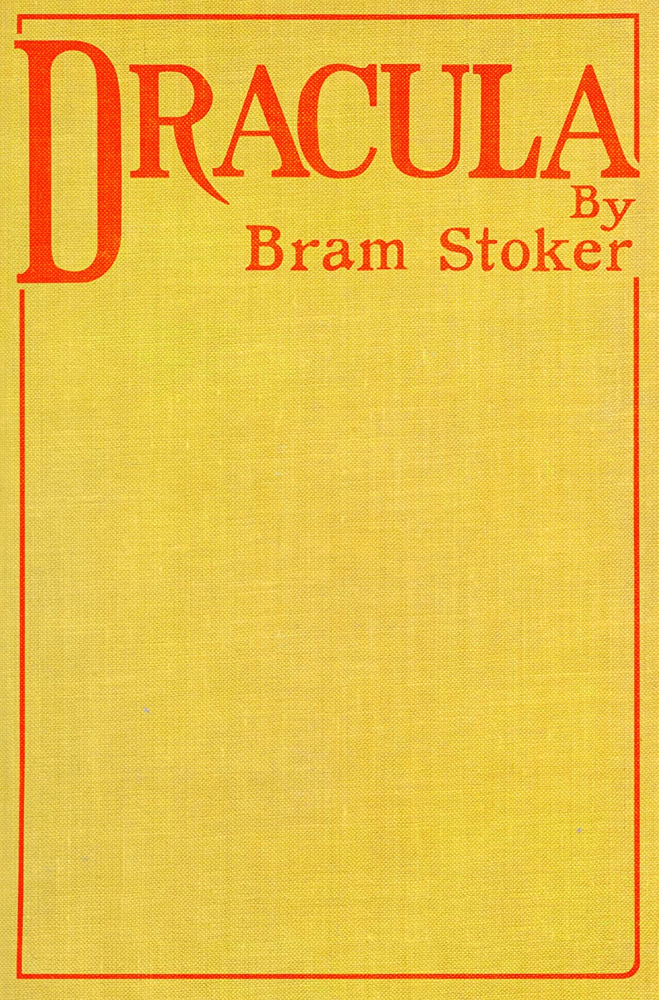 | Dracula | Bram Stoker | £8.99 |
Summary - A story about a vampire in Eastern European, Transylvania. Author - An Irish author. Reviews - 4.14/5 |
| Non-Fiction |  |
The Elements of Style | William Strunk Jr. | £10.99 |
Summary - A book about promoting clear and concise language. Author - An American professor of English. Reviews - 3.12/5 |
| Non-Fiction | 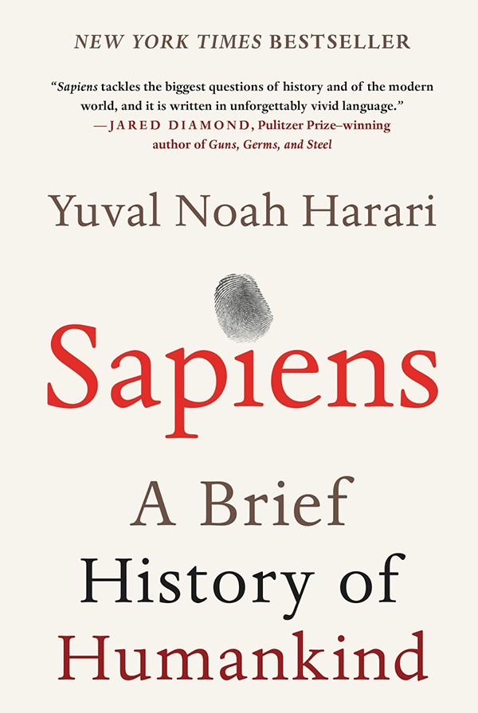 | Sapiens: A Brief History of Humankind | Yuval Noah Harari | £12.99 |
Summary - A book about evolution. Author - An medievalist, military historian, public intellectual, and popular science writer. Reviews - 1/5 |
| Non-Fiction |  |
Educated | Tara Westover | £10.99 |
Summary - A memoir about life in rural Idaho. Author - An American memoirist, essayist and historian. Reviews - 3.12/5 |
| Non-Fiction |  |
Becoming | Michelle Obama | £11.49 |
Summary - A journey from a young girl in Chicago to First Lady. Author - An American attorney and author who served as the first lady of the Unitedd States from 2009 to 2017. Reviews - 4.12/5 |
| History |  |
John Adams | David McCullough | £13.99 |
Summary - A biography about the second U.S. President. Author - An American popular historian. Reviews - 4.45/5 |
| Self Improvement |  |
Think and Grow Rich | Napolean Hill | £10.99 |
Summary - Outlines success and wealth creation. Author - An American self-help author. Reviews - 3.12/5 |
| Self Improvement | 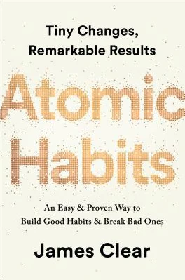 | Atomic Habits | James Clear | £10.99 |
Summary - Building good habits and breaking bad ones. Author - An American writer. Reviews - 4.11/5 |
| Self Improvement | 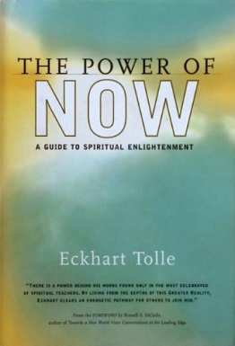 | The Power of Now | Eckhart Tolle | £9.99 |
Summary - Emphasises the importance of living in the present moment, free from the mind's preoccupation with the past and future. Author - A German spiritual teacher and self-help author. Reviews - 3.33/5 |
| Self Improvement | 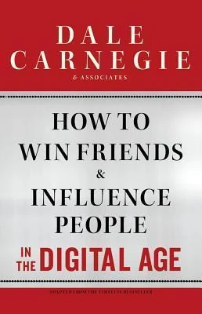 | How to Win Friends and Influence People | Dale Carnegie | £7.99 |
Summary - Self help book. Author - An American writer and teacher. Reviews - 4/5 |
| Children |  |
Harry Potter and the Philospher's Stone | J.K. Rowling | £8.99 |
Summary - A story about Harry Potter where he attends Hogwarts, a school of magic. Author - A British author and philanthropist. Reviews - 4/5 |
| Children |  |
Charlotte's Web | E.B. White | £6.99 |
Summary - A story about a pig named Wilbur and his friendship with a spider. Author - An American writer. Reviews - 5/5 |
| Children |  |
Matilda | Roald Dahl | £7.49 |
Summary - A story about an intelligent girl with psychic powers. Author - A British author. Reviews - 4.39/5 |